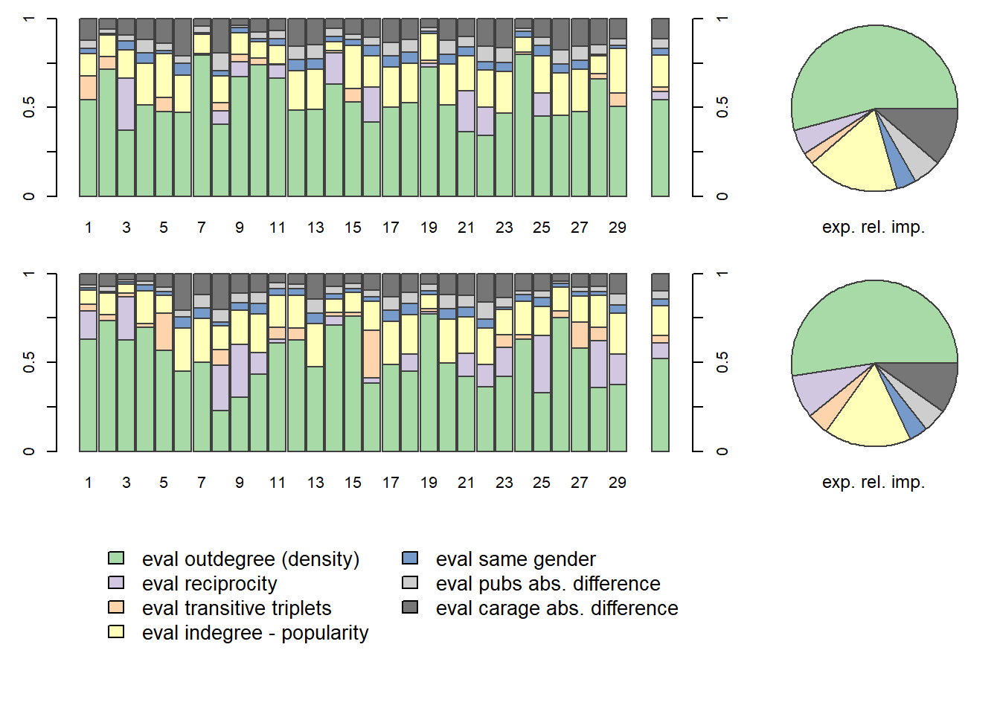

packages = c("RSiena", "tidyverse", "stringdist", "stringi", "dplyr", "stringr")
library(magrittr)
library(tidyverse)
library(stringr)
library(RSiena)
library(stringdist)
library(stringi)
library(dplyr)
library(stringr)
library(igraph)
library(statnet)
fpackage.check <- function(packages) {
lapply(packages, FUN = function(x) {
if (!require(x, character.only = TRUE)) {
install.packages(x, dependencies = TRUE)
library(x, character.only = TRUE)
}
})
}
fsave <- function(x, file = NULL, location = "./data/processed/") {
ifelse(!dir.exists("data"), dir.create("data"), FALSE)
ifelse(!dir.exists("data/processed"), dir.create("data/processed"), FALSE)
if (is.null(file))
file = deparse(substitute(x))
datename <- substr(gsub("[:-]", "", Sys.time()), 1, 8)
totalname <- paste(location, datename, file, ".rda", sep = "")
save(x, file = totalname) #need to fix if file is reloaded as input name, not as x.
}
fload <- function(filename) {
load(filename)
get(ls()[ls() != "filename"])
}
fshowdf <- function(x, ...) {
knitr::kable(x, digits = 2, "html", ...) %>%
kableExtra::kable_styling(bootstrap_options = c("striped", "hover")) %>%
kableExtra::scroll_box(width = "100%", height = "300px")
}
# this is the most important one. We created it in the previous script
f_pubnets <- function(df_scholars = df, list_publications = publications, discip = "sociology", affiliation = "RU",
waves = list(wave1 = c(2017, 2018, 2019), wave2 = c(2020, 2021, 2022))) {
publications <- list_publications %>%
dplyr::bind_rows() %>%
dplyr::distinct(title, .keep_all = TRUE)
df_scholars %>%
dplyr::filter(affil1 == affiliation | affil2 == affiliation) %>%
dplyr::filter(discipline == discip) -> df_sel
networklist <- list()
for (wave in 1:length(waves)) {
networklist[[wave]] <- matrix(0, nrow = nrow(df_sel), ncol = nrow(df_sel))
}
publicationlist <- list()
for (wave in 1:length(waves)) {
publicationlist[[wave]] <- publications %>%
filter(gs_id %in% df_sel$gs_id) %>%
filter(year %in% waves[[wave]]) %>%
dplyr::select(author) %>%
lapply(str_split, pattern = "," )
}
publicationlist2 <- list()
for (wave in 1:length(waves)) {
publicationlist2[[wave]] <- publicationlist[[wave]]$author %>%
# lowercase
lapply(tolower) %>%
# Removing diacritics
lapply(stri_trans_general, id = "latin-ascii") %>%
# only last name
lapply(word, start = -1, sep = " ") %>%
# only last last name
lapply(word, start = -1, sep = "-")
}
for (wave in 1:length(waves)) {
# let us remove all publications with only one author
remove <- which(sapply(publicationlist2[[wave]], FUN = function(x) length(x) == 1) == TRUE)
publicationlist2[[wave]] <- publicationlist2[[wave]][-remove]
}
for (wave in 1:length(waves)) {
pubs <- publicationlist2[[wave]]
for (ego in 1:nrow(df_sel)) {
# which ego?
lastname_ego <- df_sel$lastname[ego]
# for all publications
for (pub in 1:length(pubs)) {
# only continue if ego is author of pub
if (lastname_ego %in% pubs[[pub]]) {
aut_pot <- which.max(pubs[[pub]] %in% lastname_ego)
# only continue if ego is first author of pub
if (aut_pot == 1) {
# check all alters/co-authors
for (alter in 1:nrow(df_sel)) {
# which alter
lastname_alter <- df_sel$lastname[alter]
if (lastname_alter %in% pubs[[pub]]) {
networklist[[wave]][ego, alter] <- networklist[[wave]][ego, alter] + 1
}
}
}
}
}
}
}
return(list(df = df_sel, network = networklist))
}df <- fload("./Data/Data_processed/totaldata.rda")
publications <- fload("./Data/Data_processed/20230621list_publications_jt.rda")
output <- f_pubnets(df_scholars = df, list_publications = publications, discip = "sociology", affiliation = "RU",
waves = list(wave1 = c(2017, 2018, 2019), wave2 = c(2020, 2021, 2022)))
df_soc <- output[[1]]
df_network <- output[[2]]output <- f_pubnets()
df_soc <- output[[1]]
df_network <- output[[2]]wave1 <- df_network[[1]]
wave2 <- df_network[[2]]
# let us put the diagonal to zero
diag(wave1) <- 0
diag(wave2) <- 0
# we want a binary tie (not a weighted tie)
wave1[wave1 > 1] <- 1
wave2[wave2 > 1] <- 1
# put the nets in an array
net_soc_array <- array(data = c(wave1, wave2), dim = c(dim(wave1), 2))
# dependent
net <- sienaDependent(net_soc_array)#gender
gender <- coCovar(df$genderman)
#number of publications
pubs <- coCovar(df$num_pubs)
#number of co-authors
coaut <- coCovar(df$num_coauth)
#Career length
carage <- coCovar(df$career_age)
mydata <- sienaDataCreate(net, gender, pubs, coaut, carage)
### Step 2: create effects structure
myeffs <- getEffects(mydata)
# effectsDocumentation(myeffs)
### Step 3: Get initial description
ifelse(!dir.exists("results"), dir.create("results"), FALSE)## [1] FALSEprint01Report(mydata, modelname = "results/soc_init")### Step4: specify model with structural effects
myeffs <- includeEffects(myeffs, inPop) #some publish a lot, some not. (interpretation: talent/luck? )## effectName include fix test initialValue parm
## 1 indegree - popularity TRUE FALSE FALSE 0 0myeffs <- includeEffects(myeffs, transTrip)## effectName include fix test initialValue parm
## 1 transitive triplets TRUE FALSE FALSE 0 0myeffs <- includeEffects(myeffs, absDiffX, interaction1 = "pubs")## effectName include fix test initialValue parm
## 1 pubs abs. difference TRUE FALSE FALSE 0 0### Step5 estimate
myAlgorithm <- sienaAlgorithmCreate(projname = "soc_report")## If you use this algorithm object, siena07 will create/use an output file soc_report.txt .(ans <- siena07(myAlgorithm, data = mydata, effects = myeffs))## Estimates, standard errors and convergence t-ratios
##
## Estimate Standard Convergence
## Error t-ratio
##
## Rate parameters:
## 0 Rate parameter 3.5481 ( 1.0032 )
##
## Other parameters:
## 1. eval outdegree (density) -2.5344 ( 0.3451 ) 0.0026
## 2. eval reciprocity 1.2707 ( 0.5142 ) 0.0561
## 3. eval transitive triplets 0.6632 ( 0.4893 ) 0.0374
## 4. eval indegree - popularity 0.1661 ( 0.0898 ) 0.0132
## 5. eval pubs abs. difference 0.0003 ( 0.0012 ) -0.0117
##
## Overall maximum convergence ratio: 0.0796
##
##
## Total of 2207 iteration steps.# (the outer parentheses lead to printing the obtained result on the screen) if necessary, estimate
# further
(ans <- siena07(myAlgorithm, data = mydata, effects = myeffs, prevAns = ans))## Estimates, standard errors and convergence t-ratios
##
## Estimate Standard Convergence
## Error t-ratio
##
## Rate parameters:
## 0 Rate parameter 3.5121 ( 0.9483 )
##
## Other parameters:
## 1. eval outdegree (density) -2.5331 ( 0.3430 ) 0.0354
## 2. eval reciprocity 1.2710 ( 0.5482 ) 0.0446
## 3. eval transitive triplets 0.6849 ( 0.4580 ) 0.1356
## 4. eval indegree - popularity 0.1612 ( 0.0832 ) 0.0647
## 5. eval pubs abs. difference 0.0004 ( 0.0012 ) 0.0409
##
## Overall maximum convergence ratio: 0.1581
##
##
## Total of 2345 iteration steps.In the first model (above), only the structural network effects are added. The model shows that the density effect is strongly negative and significant (b=-2.532; se=0.348). That this effect is negative is logic following the fact that this effect is the effect of the observed ties as part of all possible ties. A degree-effect of ‘0’ would mean that half of the possible ties would be observed, as there are fewer than 50% of possible ties in the publication network of the sociology staff of the Radboud University. Furthermore no significant effect of transitive triplets is observed (b=0.616; se=0.468). This means that researchers of the Sociology department of the Radboud University do not have a preference for a transitive tie, compared to a non-transitive tie. Also, the activity and popularity effect (b=0.166; se=0.085) is also not significant, signalling that scientists at the sociology department of the Radboud University do not prefer to co-publish with other staff members that have already written a paper together. Lastly, the number of publications by the ego does not have a significant effect (b=0.000; se=0.001).
myeffs2 <- getEffects(mydata)
myeffs2 <- includeEffects(myeffs2, inPop) #some publish a lot, some not. (interpretation: talent/luck? )## effectName include fix test initialValue parm
## 1 indegree - popularity TRUE FALSE FALSE 0 0myeffs2 <- includeEffects(myeffs2, transTrip)## effectName include fix test initialValue parm
## 1 transitive triplets TRUE FALSE FALSE 0 0myeffs2 <- includeEffects(myeffs2, sameX, interaction1 = "gender")## effectName include fix test initialValue parm
## 1 same gender TRUE FALSE FALSE 0 0myeffs2 <- includeEffects(myeffs2, absDiffX, interaction1 = "pubs")## effectName include fix test initialValue parm
## 1 pubs abs. difference TRUE FALSE FALSE 0 0(ans2 <- siena07(myAlgorithm, data = mydata, effects = myeffs2, prevAns = ans))## Estimates, standard errors and convergence t-ratios
##
## Estimate Standard Convergence
## Error t-ratio
##
## Rate parameters:
## 0 Rate parameter 3.5581 ( 0.9613 )
##
## Other parameters:
## 1. eval outdegree (density) -2.4633 ( 0.3934 ) 0.0030
## 2. eval reciprocity 1.2529 ( 0.5191 ) 0.0000
## 3. eval transitive triplets 0.6769 ( 0.4544 ) 0.0131
## 4. eval indegree - popularity 0.1599 ( 0.0864 ) -0.0283
## 5. eval same gender -0.1139 ( 0.3259 ) -0.0417
## 6. eval pubs abs. difference 0.0003 ( 0.0012 ) 0.0051
##
## Overall maximum convergence ratio: 0.1013
##
##
## Total of 2423 iteration steps.This second model, with the inclusion of the same gender preference interaction, shows that compared to the first model the indegree popularity remains insignificant (b=0.168; se=0.087). This indicates that researchers prefer to write papers with other researchers who are co-authors of those who the ego has already worked with. Furthermore, the model shows that the effect of gender of the collaborator is not significant (b=-0.141; se=0.301). Indicating that researchers from the sociology department of the Radboud University do not have a preference when it comes to the gender of the alters which whom they collaborate for a paper. This refutes the idea of homophily as an explaining mechanism for the development of scientific collaboration networks. Secondly, the effect of transitivity is also not significant (b=0.608; se=0.495), meaning that researchers at the Sociology department of the Radboud University do not have a preference to close triads. Lastly, the models shows that the effect of the number of publications does not have a significant effect (b=0.000; se=0.001).
myeffs3 <- getEffects(mydata)
myeffs3 <- includeEffects(myeffs3, inPop) #some publish a lot, some not. (interpretation: talent/luck? )## effectName include fix test initialValue parm
## 1 indegree - popularity TRUE FALSE FALSE 0 0myeffs3 <- includeEffects(myeffs3, transTrip)## effectName include fix test initialValue parm
## 1 transitive triplets TRUE FALSE FALSE 0 0myeffs3 <- includeEffects(myeffs3, sameX, interaction1 = "gender")## effectName include fix test initialValue parm
## 1 same gender TRUE FALSE FALSE 0 0myeffs3 <- includeEffects(myeffs3, absDiffX, interaction1 = "pubs")## effectName include fix test initialValue parm
## 1 pubs abs. difference TRUE FALSE FALSE 0 0myeffs3 <- includeEffects(myeffs3, absDiffX, interaction1 = "coauth")## There is no effect with short name absDiffX,
## and with interaction1 = <coauth>, interaction2 = <>, and type = <eval>,
## for dependent variable net .
## See effectsDocumentation() for this effects object.myeffs3 <- includeEffects(myeffs3, absDiffX, interaction1 = "carage")## effectName include fix test initialValue parm
## 1 carage abs. difference TRUE FALSE FALSE 0 0(ans3 <- siena07(myAlgorithm, data = mydata, effects = myeffs3, prevAns = ans2))## Estimates, standard errors and convergence t-ratios
##
## Estimate Standard Convergence
## Error t-ratio
##
## Rate parameters:
## 0 Rate parameter 3.5467 ( 0.9144 )
##
## Other parameters:
## 1. eval outdegree (density) -2.5413 ( 0.3822 ) -0.0175
## 2. eval reciprocity 1.2329 ( 0.5361 ) 0.0193
## 3. eval transitive triplets 0.6535 ( 0.5027 ) -0.0870
## 4. eval indegree - popularity 0.1505 ( 0.0860 ) -0.0370
## 5. eval same gender -0.1012 ( 0.3231 ) -0.0002
## 6. eval pubs abs. difference -0.0008 ( 0.0020 ) 0.0022
## 7. eval carage abs. difference 0.0168 ( 0.0226 ) 0.0121
##
## Overall maximum convergence ratio: 0.1345
##
##
## Total of 2559 iteration steps.Based on the final model, with all the control variables included, the effect of the alters’ gender remains non-significant (b=-0.099; se=0.318). Thus, when not only taking structural network effects into account, the effect of gender homophily does not hold. With this result, the hypothesis about gender homophily cannot be supported. Researchers of the Sociology department of the Radboud University do not seem to consider the gender of their potential co-authors. This also applies to the number of publications of potential co-authors (b=0.001; se=0.002) and career age (b=0.017; se=0.021), as these effects are all insignificant.
mydata4 <- sienaDataCreate(net, gender)
myeff4 <- getEffects(mydata4)
myeff4 <- includeEffects(myeff4, isolateNet, inPop, outAct)## effectName include fix test initialValue parm
## 1 indegree - popularity TRUE FALSE FALSE 0 0
## 2 outdegree - activity TRUE FALSE FALSE 0 0
## 3 network-isolate TRUE FALSE FALSE 0 0myeff4 <- includeEffects(myeff4, sameX, interaction1 = "gender")## effectName include fix test initialValue parm
## 1 same gender TRUE FALSE FALSE 0 0myeff4 <- includeEffects(myeff4, egoX, interaction1 = "gender")## effectName include fix test initialValue parm
## 1 gender ego TRUE FALSE FALSE 0 0myeff4 <- includeEffects(myeff4, transTrip)## effectName include fix test initialValue parm
## 1 transitive triplets TRUE FALSE FALSE 0 0myeff4 <- includeInteraction(myeff4, egoX, sameX, interaction1 = c("gender", "gender") )## effectName include fix test initialValue parm effect1
## 1 gender ego x same gender TRUE FALSE FALSE 0 0 235
## effect2
## 1 285(ans4 <- siena07(myAlgorithm, data = mydata4, effects = myeff4))## Estimates, standard errors and convergence t-ratios
##
## Estimate Standard Convergence
## Error t-ratio
##
## Rate parameters:
## 0 Rate parameter 3.9711 ( 1.2286 )
##
## Other parameters:
## 1. eval outdegree (density) -2.6614 ( 0.9063 ) -0.0538
## 2. eval reciprocity 1.2688 ( 0.6437 ) -0.0284
## 3. eval transitive triplets 0.3648 ( 0.4940 ) -0.1054
## 4. eval indegree - popularity 0.1810 ( 0.0999 ) -0.0568
## 5. eval outdegree - activity 0.0802 ( 0.1466 ) -0.0621
## 6. eval network-isolate 0.8861 ( 2.0329 ) -0.0173
## 7. eval gender ego -0.6420 ( 0.5743 ) 0.0069
## 8. eval same gender 0.0012 ( 0.3371 ) -0.0369
## 9. eval gender ego x same gender 0.3361 ( 0.6971 ) 0.0057
##
## Overall maximum convergence ratio: 0.1281
##
##
## Total of 2837 iteration steps.vbar <- attributes(mydata4$cCovars$gender)$mean
vi <- 1
vj <- 0
eval <- ans4$theta[7]*(vi-vbar) + ans4$theta[6]*(vj-vbar) + ans4$theta[8]*(vj == vi)
eval## [1] -0.7682862Based on these results, the conclusion can be drawn that women prefer to collaborate with women (0.2498), therefore presenting evidence in line of the hypothesis that women prefer to work with women more than with men. Contrastingly, in the data there is no evidence that suggests that men prefer to collaborate with other men (-0.384), leading to the rejection of the hypothesis that men prefer to collaborate with other men.
# get parameters
theta.eval <- ans3$theta
# and effects
myeff.eval <- ans3$effects
# use sienaRI()
RI <- sienaRI(data = mydata, theta = theta.eval, algorithm = myAlgorithm, effects = myeff.eval)
plot(RI, addPieChart = TRUE)
The bar charts display the relative impacts of effects of the model on individual researchers’ decisions for all observations. Based on this relative importance pie chart, the conclusion can be drawn that for most of the researchers in the sociology department of the Radboud University is the outdegree is the most important influence, with popularity being the second most important influence.